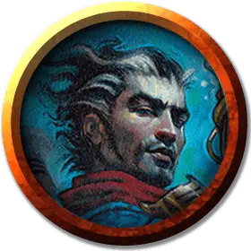

Поточный взрывоискатель
Flux Blastseeker
Средний Гуманоид (Любая раса), хаотично-нейтральный

Класс Доспеха 12 (15 с доспехом мага)
Хиты 55 (10к8 + 10)
Скорость 30 футов
| мод | спас | ||
|---|---|---|---|
| СИЛ | 10 | +0 | +0 |
| ЛОВ | 15 | +2 | +5 |
| ТЕЛ | 12 | +1 | +1 |
| мод | спас | ||
|---|---|---|---|
| ИНТ | 20 | +5 | +8 |
| МДР | 9 | −1 | −1 |
| ХАР | 14 | +2 | +2 |
Навыки Восприятие +2, Магия +8
Чувства пассивное Восприятие 12
Языки Общий, плюс один другой язык
Опасность 5 (1800 опыта)
Бонус мастерства +3
Особенности
Облачность с изгибом потока (перезарядка 5–6). Взрывоискатель может создать дополнительный эффект сразу после произнесения заклинания. Бросьте 1к6, чтобы определить эффект:
• 1-3. Взрывоискатель телепортируется, меняясь местами с существом, которое он видит в пределах 30 футов от себя.
• 4-6. Взрывоискатель и все существа в пределах 10 футов от него должны преуспеть в спасброске Телосложения Сл 16, иначе получат 11 (2к10) урона звуком.
Врожденное колдовство. Базовой характеристикой взрывоискателя является Интеллект (Сл спасброска от заклинаний 16, +8 к попаданию атаками заклинаниями). Он может накладывать следующие заклинания, не требуя никаких компонентов, кроме своего снаряжения Иззетов, которое не работает для других:
• 3/день каждое: доспехи мага [mage armor] (только на себя), палящий луч [scorching ray];
• 1/день каждое: изгнание [banishment], конус холода [cone of cold], переносящая дверь [dimension door], огненный шар [fireball], град [ice storm].
Действия
Боевой посох. Рукопашная атака оружием: +3 к попаданию, досягаемость 5 фт., одна цель. Попадание: 3 (1к6) дробящего урона или 4 (1к8) дробящего урона, если используется двумя руками.
Описание
В то время как химики сосредотачиваются на изобретении новых инструментов, оружия и других устройств для использования гильдией, роль искателя взрыва состоит в том, чтобы заставить эти устройства работать. Несмотря на название, не все такие устройства производят взрывы, но все самые интересные (с точки зрения Иззетов) производят.